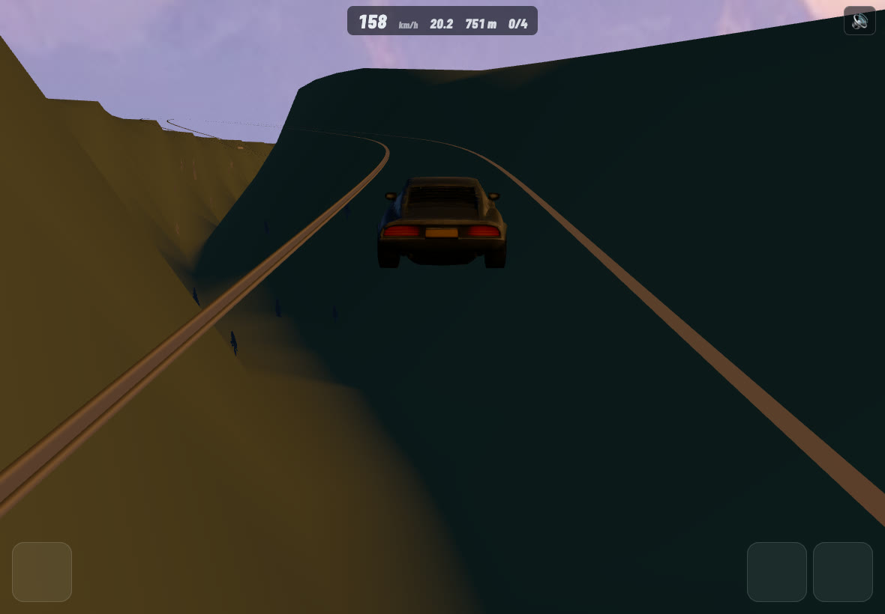

20 November 2026 · 3D browser rally game
Pocket Roads · Splash 1.7.0
Tenaz ended COMPLETE_WITH_GAPS after 3 h 8 min, 56 sessions and 19 tasks done, with no session ended early. Both final reviews returned CHANGES; T020 (make the stage read as a dusk alpine pass) was not built. Played: the virtual mode runs a full race with checkpoints, penalties, a medal and replay, but the car follows the road on rails, so holding throttle alone wins gold. The physical mode's placement screen covers the Start button, so a fresh setup cannot start a race.

What was checked
- Runner final state COMPLETE_WITH_GAPS on 20 November 19:37:54.214 UTC: 19 tasks done, T020 to do. The three bootstrap steps passed on their first attempts (18 requirements, R17 and R18 manual). Final review 1 returned CHANGES and added T017 (stage preview art), T018 (grounded terrain) and T019 (visible placement marker); final review 2 returned CHANGES and added T020, which Tenaz's two-cycle limit left open. Its verdict: every functional requirement met, but the scene does not read as a dusk alpine pass.
- Configuration: the setup of pi-adapted Raycaster run 2 (same checkpoint, engine scripts, Tenaz main 2f1b04c binary, Pi 1.4.0, thinking off, temperature 0.8, vision, generic engine, Tenaz defaults, sandbox off), launched with --allow-weak-engine. Brief and seed as the Sushi + Tenaz Pocket Roads run: the same CHALLENGE.md and the same 16 runtime asset, library and notice files, checked by hash.
- Runner events: no session ended early, no compactions, no provider errors and no response stopped at the output limit. Three replans added no tasks. 59 of 936 tool calls (6.3%) ended in an error, 36 of them bash commands that exited with an error, such as a failing check.
- Operator rerun of `verify --all` on a clean clone of the final commit d77a42b: 20 of 20 passed, including the runtime check, which serves the game from a nested path in headless Chromium and drives steering, calibration across a reload, both camera modes, pause, a collision penalty, a full race and restart.
- Played by Claude in a Chromium window with a real GPU on 20 November. Virtual mode: a full race finished in 90.6 s with gold, holding W only; steering only moves the car up to 3.2 m left or right of the centre line, the road curves by itself. Four barrier hits added 8 s. The road surface does not show as asphalt, the avalanche gallery is a black slab overhead, and the ready screen stays on 'Loading…' without the stage preview art.
- Physical mode: choosing Physical on the ready screen opens the placement overlay, whose full-screen layer covers the Start and Virtual buttons; Save position does not close it, and Enter, Space and W do not start. After a reload the mode is remembered and Start works, but the placement overlay no longer shows. The game then drives with the road anchored and the coupe hidden.
- Vision: no image refusals.
- Engine metrics: a fresh Splash process serving only this run. Its 854 summaries are 6 preflight requests and 848 run requests. All 848 proxy records match a Splash summary one-to-one and in order by (prompt, output, cached). Per session, the totals equal the Pi usage Tenaz journaled.
- Memory: Tenaz's 485 host samples run from start to end. Wired memory went from 28.5 GiB to about 37 GiB (median 37.4, maximum 42.3). Pressure was at warning in 445 samples from 16:44 UTC, with other work on the Mac, and never critical; 1.5 GiB was swapped in.
- Public artifact: the runtime files of the final commit d77a42b (index.html, style.css, src, assets, vendor; unchanged) and a virtual-mode frame at 1180x820 from Claude's drive with a real GPU. The 16 supplied files match the seed by hash. The project, raw logs, journal and sessions stay in the ignored local archive.
Limits of this evidence
Completion is the runner outcome. The pi-adapted setup that finished the Raycaster three times, on Pocket Roads. Against the Sushi + Tenaz run on the same brief and seed: about a tenth of the time and a fifth of the requests, but a thinner game. Tenaz v0.8.0's runner code plus recovery fixes; the binary reports 0.8.0 (2f1b04c).
Configuration
The model, serving engine and agent used for this execution.
| Field | Value | Detail |
|---|---|---|
| Model · primary | Qwen 3.8 27B pi-adapted · primary · reasoning none (thinking off, as the adapter's model card advises) | OptiQ mixed precision: MLX affine 4-bit, group size 64, with 8-bit layers; vision tower in a bfloat16 sidecar |
| Checkpoint · primary | mlx-community/Qwen3.8-27B-pi-adapted-OptiQ-4bit | primary model artifact · revision fc7fd70ffc6b661ad308e31643b74a49e69b049c |
| Model · drafter | Qwen 3.8 27B DFlash2 · drafter | — |
| Checkpoint · drafter | incoai/Qwen3.8-27B-DFlash2 | drafter model artifact · revision 015e795645c74b1a0eeef3b570031fb62e769bc5 |
| Runtime | Splash 1.7.0 · One splash serve process for the whole run, registered with Tenaz as a generic engine with the same start and stop scripts as pi-adapted Raycaster run 2; started before the launch and never restarted. --model-dir on the local MLX folder, --max-context 128K, --reasoning-effort none (every request served with thinking off), --idle-release off, SSD prefix cache at its default quota, Neural Engine FFN split at share 0.24 from its startup calibration, vision loaded. Temperature 0.8 pinned through the Tenaz proxy; top-p left to the engine. mode | inference engine and exact build |
| Harness | Pi coding agent over RPC driven by Tenaz main 2f1b04c (0.8.0 plus the recovery fixes for a deleted .tenaz/private) 1.4.0 | the agent or client that drove the run |
| Runner | Tenaz main · build 2f1b04c after 0.8.0 (unreleased) | open-source runner, github.com/aartiles/tenaz · how the runner evolved |
| Hardware | Apple MacBook Pro · 64 GB unified memory | hardware recorded for this execution |
| Workload | Pocket Roads · revision 1 | Fresh implementation from the revised brief with the frontier build's runtime assets and Three.js supplied before launch, the same brief and seed as the Sushi + Tenaz run. The local model wrote the specification, task plan, checks and game. Asset generation is outside the run. No operator action after launch. |
| Context window | 131,072 tokens | maximum context configured for the serving runtime |
| Repetitions | 1 | executions recorded for this workload; one means an indicative result, not an estimate |
Inference measurements
Engine-side rates for this run. Each figure states its own statistic; figures from different runs are not interchangeable.
| Metric | Value | Definition |
|---|---|---|
| TTFT · median | 1.8 s | Median engine-reported TTFT across matched responses. · n=848 · Mean 2.943 s. Includes the run's cache mix; not a prefill rate. |
| Decode · per-request median | 48.6 tok/s | Median of Splash's per-request decode rate across matched responses. · n=848 |
| Decode · output-weighted | 43.9997 tok/s | Total output tokens divided by the sum of each request's output tokens over its decode rate. · n=848 |
| Tokens per decode cycle · drafter | 5.3085 tokens/cycle | Output-token-weighted mean of Splash's tokens per decode cycle with the DFlash2 drafter (median 5.2). · n=848 · Splash logs tokens per cycle, not drafted and accepted counts, so this is not an acceptance percentage. |
| Host wired memory · median | 37.37 GiB | Median host wired memory across Tenaz's 30-second samples from start to end of the run. · n=485 · 28.46 GiB at the first sample, maximum 42.25 GiB. Host-wide, includes every process. |
| Swapped in during the run | 1.513 GiB | Sum of swap-in deltas across Tenaz's 30-second host memory samples; host-wide swap I/O, not resident memory. · n=485 · Memory pressure at warning in 445 of 485 samples, from 16:44 UTC to the end, with other work on the Mac; normal in 40 and never critical. Free memory fell to 0.07 GiB at its lowest. |
Agent session counters
Agent-wide usage totals. These include reasoning, tool calls and waiting, and are not model decode speed.
| Metric | Value | Definition |
|---|---|---|
| Run elapsed | 188.4 min | Session 001 start after the preflight (20 November 16:29:29.278 UTC) to COMPLETE_WITH_GAPS (19:37:54.214 UTC); includes tools, checks and retries. · n=1 · 3 h 8 min 24.9 s; no pauses. |
| Agent sessions | 56 sessions | All harness sessions: 3 bootstrap, 24 builder, 24 reviewer, 3 replan and 2 final reviewer. · n=1 |
| Sessions ended early | 0 sessions | Sessions with ok=false. · n=56 · No session stopped at its turn budget, for looping or for context. |
| Operator interventions | 0 actions | No pauses, relaunches, configuration changes or edits after the first session started. · n=1 |
| Model responses | 848 responses | All proxy request records; 0 are the empty records of turns Tenaz aborted and 0 ended in an error with no tokens. · n=1 |
| Matched model requests | 848 requests | Proxy responses matched one-to-one, in order and uniquely to Splash summaries by total prompt, output and cached-token triple. · n=1 · 6 preflight summaries unassigned and excluded; the 0 empty records have no Splash summary, and every Splash summary in the run window is matched. |
| Tool calls | 936 calls | Sum of harness tool_calls across all 56 session records. · n=56 |
| Tool errors | 59 errors | Pi tool executions that ended with isError, counted in the sessions' RPC logs. · n=936 · 36 of them bash commands that exited with an error, such as a failing check; not a count of malformed tool calls. |
| Context compactions | 0 compactions | Compaction count across all session records. · n=56 |
Context and token counters
Token totals as reported by the harness or engine. Cached and cumulative figures are not additive with fresh input.
| Metric | Value | Definition |
|---|---|---|
| Maximum prompt context | 83,314 tokens | Maximum prompt input across matched responses; not the configured server window. · n=848 |
| Cumulative input | 20,389,943 tokens | Sum of total prompt tokens across matched responses, including repeatedly reused context; not unique input. · n=848 |
| Cached input | 19,346,176 tokens | Sum of prompt tokens Splash reported cached for matched responses. · n=848 |
| Fresh input | 1,043,767 tokens | Total prompt input minus cached input for matched responses. · n=848 |
| Output tokens | 360,561 tokens | Sum of output tokens across matched responses; thinking was off, so no reasoning output. · n=848 |
| of which reasoning output | 0 tokens | Reasoning tokens reported by the proxy; Splash served every request with thinking off. · n=848 |
| Prompt-cache token share | 94.881 % | Cached prompt tokens divided by total prompt tokens, weighted by tokens across matched responses. · n=848 |
Recorded check counters
Counts from the checks recorded with this run.
| Metric | Value | Definition |
|---|---|---|
| Tasks completed | 19 tasks | Final task cards marked done; T020, added by the second final review, was left to do. · n=20 |
| Reviews returning changes | 5 reviews | Task review verdicts returning CHANGES (T002, T003 and T018 on their first attempts, T016 on its first two). Both final reviews returned CHANGES. · n=24 |
| Project checks passing | 20 checks | Checks passing in `verify --all`, rerun by the operator on a clean clone of the final commit in headless Chromium. · n=20 · Model-written checks, not an independent acceptance suite. The runtime check drives a full race in a real headless browser. |
Request records & provenance
848 numeric request records in proxy order, each matched one-to-one to a Splash summary by total prompt, output and cached tokens. TTFT and decode come from Splash's own timing lines. Preflight summaries are excluded. No prompts, tool results, session identifiers or local paths are included.
Run ID: 2026-11-20-qwen38-27b-pi-adapted-optiq4-splash-v170-tenaz-main-2f1b04c-pi-pocket-roads
One execution, with checks transcribed from the retained record. A completed session is not a quality score. Measurement method · All runs